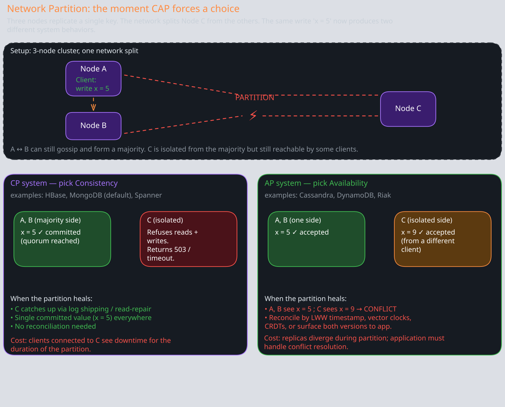
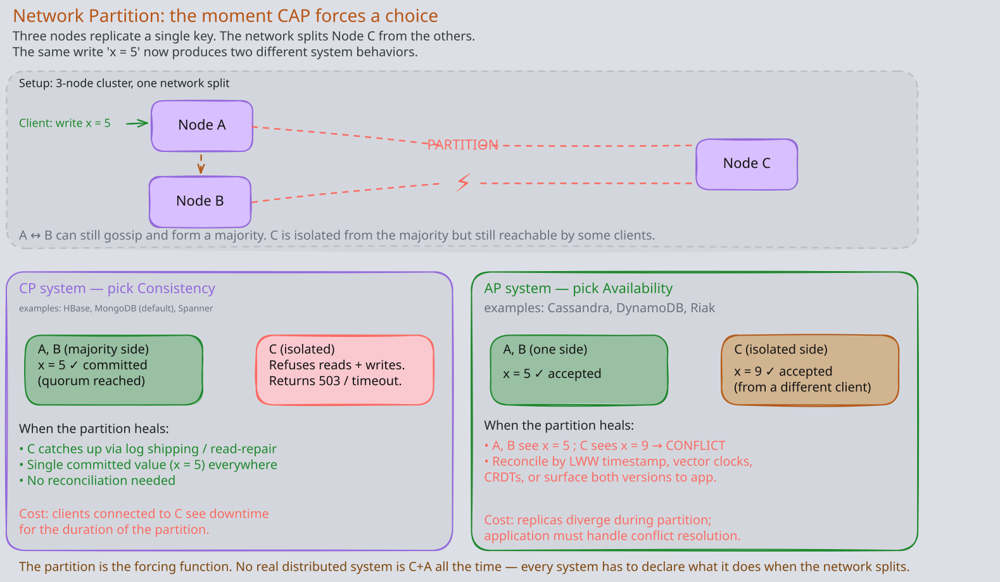
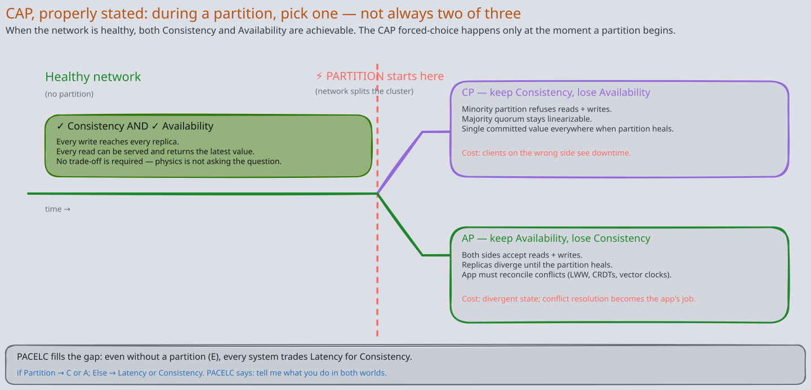
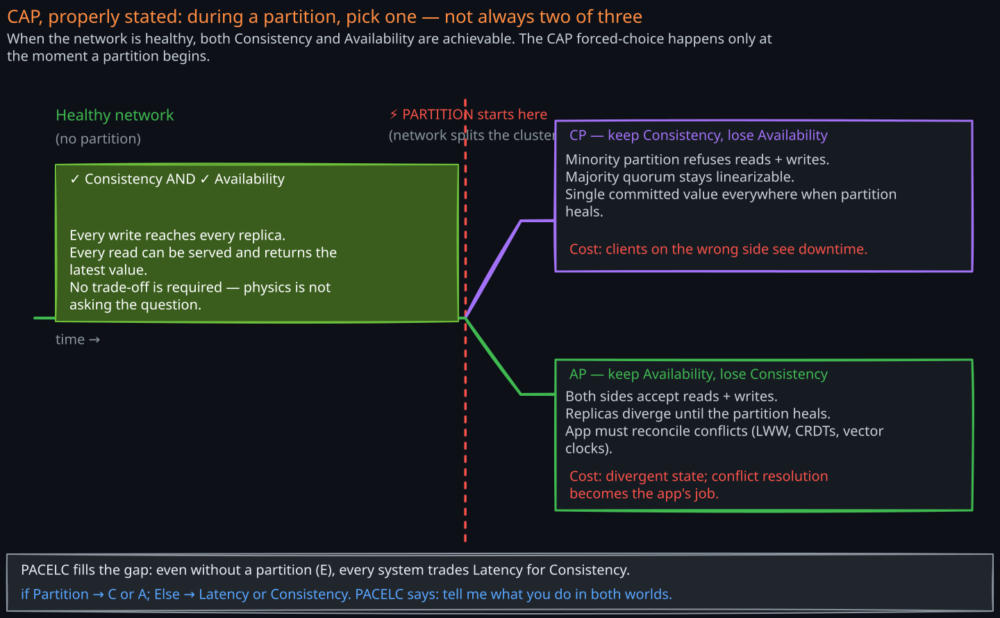
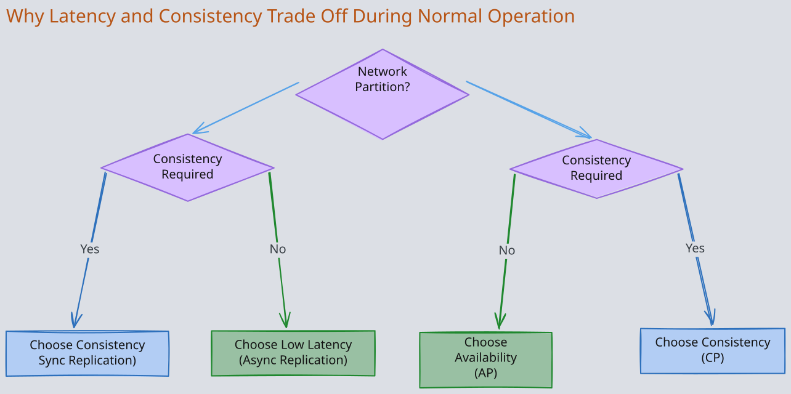
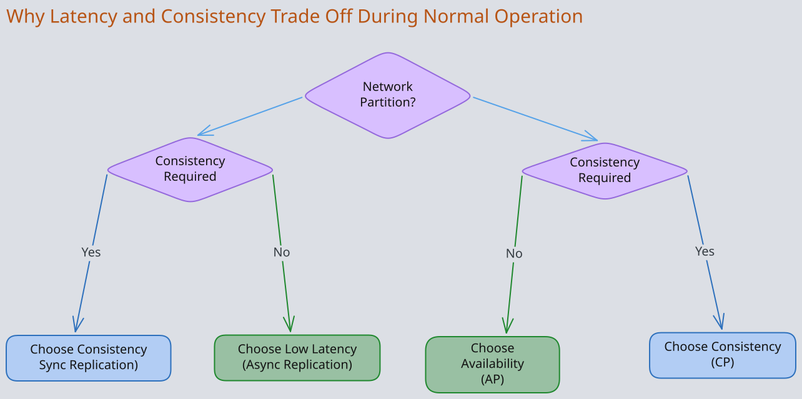

The Story
Eric Brewer presented CAP as a conjecture at a keynote in 2000. Gilbert and Lynch proved it formally in 2002. Then Brewer spent the next twelve years regretting how “pick 2 of 3” took over the industry’s thinking. In 2012, he published a follow-up essentially saying: that framing is misleading. Partitions are not optional — they will happen — so the real choice is between consistency and availability during a partition. The oversimplified version of CAP arguably did more damage than good to a generation of engineers who thought they could simply “choose AP” and move on without understanding what they were giving up.
1. CAP Theorem
Related Topics: 03-Consensus-Algorithm, 04-Distributed-Lock, 05-Distributed-Transactions, Cassandra, MongoDB, 03-Consistency-Models
1. The Fundamental Problem
Imagine you run a database replicated across two datacenters — one in US-East, one in EU-West. A user in New York writes balance = $500 to the US-East replica. Milliseconds later, before that write has propagated across the Atlantic, a user in London reads balance from the EU-West replica. What should the system do?
There are only two options:
- Return the stale value. The London user sees the old balance. The system is available (it responded), but inconsistent (the two replicas disagree).
- Block the read until the write propagates. The London user waits (or gets an error) until EU-West has the latest data. The system is consistent, but it sacrificed availability for that read.
This is not a design flaw you can engineer around. It is a mathematical impossibility proven by Gilbert and Lynch in 2002: no distributed system can simultaneously guarantee Consistency, Availability, and Partition Tolerance. That impossibility is the CAP theorem.
2. The Three Guarantees
- Consistency (C): Every read receives the most recent write or an error. All nodes see the same data at the same time. Specifically, CAP refers to linearizability — the strongest form of consistency, where operations appear to execute atomically in some total order consistent with real-time ordering.
- Availability (A): Every request to a non-failing node receives a response, without the guarantee that it contains the most recent write. The system never refuses to answer.
- Partition Tolerance (P): The system continues to operate despite arbitrary message loss or delay between nodes. A network partition means some nodes cannot communicate with others.
3. The “Pick 2 of 3” Misconception
The most common misunderstanding of CAP is framing it as “pick any 2 of 3.” This framing is dangerously misleading because it implies you could pick CA and skip partition tolerance. You cannot.
In any system that runs on more than one node connected by a network, partitions will happen. Switches fail, cables get cut, cloud availability zones lose connectivity. Partition tolerance is not a design choice — it is a reality you must handle. A system that is not partition-tolerant is simply a single-node system, and CAP does not apply to single-node systems.
The real statement of CAP is: when a network partition occurs, you must choose between consistency and availability. During normal operation (no partition), you can have both. The theorem only constrains behavior during the failure mode.
This means every distributed system is either:
- CP: During a partition, the system preserves consistency by becoming partially unavailable (rejecting or blocking some requests)
- AP: During a partition, the system preserves availability by allowing responses that may be inconsistent (stale or divergent data)
There is no meaningful “CA” category for distributed systems. A system that claims to be CA is either not truly distributed, or it simply has not defined what happens during a partition (which means it will behave unpredictably when one occurs).
4. Practical Example: Network Partition Scenario


Consider a three-node replicated database where Node3 becomes unreachable due to a network fault. Nodes 1 and 2 can still communicate with each other, but neither can reach Node3. A client connected to Node1 wants to write new data, and another client connected to Node3 wants to read it.
Choosing Consistency (CP behavior): The system must ensure no client ever sees stale data. Since Node3 is unreachable and cannot receive the latest writes, the system has two sub-options:
- Refuse writes to Node1 and Node2 until Node3 is reachable again, so no data diverges. This makes the write path unavailable.
- Fence off Node3 — mark it as down and stop serving reads from it. Clients that can only reach Node3 get errors. Writes continue on Nodes 1 and 2 (assuming they form a quorum). Node3’s clients lose availability.
Either way, some portion of the system becomes unavailable to maintain the invariant that every read returns the latest write.
Choosing Availability (AP behavior): Every node continues to accept reads and writes independently. Node1 and Node2 serve their local data. Node3 serves its (now-stale) data. If a client writes to Node1 and another client writes to Node3, the replicas diverge. When the partition heals, the system must reconcile these divergent writes — typically through conflict resolution mechanisms like last-writer-wins, vector clocks, or application-level merge logic.
The critical difference: CP systems prevent divergence at the cost of availability. AP systems allow divergence and must resolve it later.


5. Real-World CP and AP Systems
CP Systems — prioritize consistency, sacrifice availability during partitions:
- MongoDB: Uses a single primary node for all writes. During a partition that isolates the primary, the replica set holds an election. Until a new primary is elected, the system cannot accept writes. Reads can be served from secondaries, but only if the client explicitly opts into eventual consistency.
- Google Spanner: Enforces external consistency (stronger than linearizability) using the TrueTime API. During a partition, Spanner will make affected regions unavailable rather than serve potentially inconsistent data.
- HBase: Built on HDFS with a single RegionServer owning each region. If a RegionServer is partitioned away, its regions are unavailable until reassignment completes.
- etcd / ZooKeeper: Consensus-based systems (Raft/ZAB) that require a majority quorum. If a partition leaves fewer than a majority of nodes in a group, that group stops accepting writes.
AP Systems — prioritize availability, accept temporary inconsistency:
- Cassandra: Peer-to-peer architecture with no single leader. Any node can accept reads and writes. During a partition, nodes on both sides continue serving requests. Uses hinted handoff and anti-entropy repair to reconcile after partition heals.
- 03-DynamoDB: Designed for “always-on” availability. Uses eventual consistency by default. Even strongly-consistent reads are only consistent within a single region — cross-region replication is always asynchronous.
- 01-01-Redis: Asynchronous replication by default. During a partition, a Redis Cluster may have two masters for the same slot (split-brain). Writes to the minority-side master are lost when the partition heals.
- CouchDB: Multi-master replication with conflict detection. Both sides of a partition accept writes freely. Conflicts are stored and surfaced to the application for resolution.
2. PACELC Theorem — Beyond Partition Behavior
CAP tells you what happens during a partition, but partitions are rare events. Most of the time, your system is operating normally. What trade-offs does it make then?
Daniel Abadi proposed the PACELC theorem in 2012 to capture this:
If there is a Partition, choose between Availability and Consistency. Else (normal operation), choose between Latency and Consistency.
The “Else” branch is where PACELC adds real insight. Even with a perfectly healthy network, replicating data takes time. The fundamental question during normal operation is: does the system wait for replicas to acknowledge before responding to the client?
1. Why Latency and Consistency Trade Off During Normal Operation
Consider a write to a database with three replicas:
Synchronous replication (consistent but slow): The primary writes data locally, sends it to both replicas, and waits for acknowledgments from all replicas before responding to the client. Every subsequent read from any replica is guaranteed to see this write. But the client’s write latency is now the maximum of all replica response times. If one replica is in a remote datacenter, every write pays the cross-datacenter round trip.
Asynchronous replication (fast but stale): The primary writes data locally and responds to the client immediately, then sends the update to replicas in the background. The client sees low latency, but a read from a replica may return stale data until the async replication completes. If the primary fails before replication finishes, the write may be lost entirely.
This is not a partition scenario — the network is healthy. But the physics of network latency forces the same fundamental choice: wait for replicas (consistent, slow) or respond early (fast, possibly stale).
Most production systems sit somewhere on this spectrum. Quorum-based systems like Cassandra let you tune the trade-off per request: QUORUM writes wait for a majority of replicas (higher consistency, moderate latency), while ONE writes respond after a single acknowledgment (low latency, weaker consistency).


2. PACELC Classifications of Real-World Systems
| System | Classification | Reasoning |
|---|---|---|
| Cassandra | PA/EL | During partitions, any node serves requests (availability). During normal operation, default consistency level is ONE — respond after a single replica ack (low latency). The system is tunable, but its default posture favors speed. |
| 03-DynamoDB | PA/EL | Designed for always-available, low-latency access. Cross-region replication is asynchronous. Even within a region, eventually consistent reads are the default. Strongly consistent reads are available but add latency and reduce availability. |
| MongoDB | PC/EC | Uses a single primary for all writes. During a partition that isolates the primary, the replica set elects a new primary — writes are unavailable until election completes (PC). During normal operation, all acknowledged writes go through the primary with journaling, and reads from the primary return the latest data. The default w:1 write concern is fast, but w:majority (recommended for production) waits for a majority of replicas, trading latency for durability (EC). |
| Google Spanner | PC/EC | Strong global consistency using TrueTime and Paxos-based replication. Every write is synchronously replicated to a majority across zones (EC). During partitions, unavailable zones cannot serve reads or writes (PC). Spanner explicitly chooses consistency over both availability and latency. |
| HBase | PC/EC | Single RegionServer per region with synchronous writes to HDFS (3-way replication). During normal operation, the HDFS write path requires acknowledgment from a majority of DataNodes (EC). During partitions, unavailable regions are reassigned, causing downtime (PC). |
| 01-01-Redis | PA/EL | Asynchronous replication by default — the primary responds before replicas acknowledge (EL). During partitions, Redis Cluster may allow writes on both sides of a split (PA). Writes to the minority side are lost on partition heal, making it a clear availability-over-consistency system. |
3. Practical Example: Distributed Shopping Cart
Consider an e-commerce shopping cart distributed across multiple datacenters. This is a classic AP/EL design choice, and understanding why reveals the PACELC trade-offs clearly.
During a Network Partition (P —> A): A user in Tokyo adds items to their cart, but the Tokyo datacenter is partitioned from the US datacenter where the cart was originally created. An availability-first system lets the Tokyo datacenter accept the cart update locally. If the user simultaneously accesses their cart from a US-based CDN, they might see a stale version. When the partition heals, the system merges both versions — typically using a CRDT (conflict-free replicated data type) like an OR-Set, where the merge rule is “union of all additions, with explicit removals tracked separately.”
A consistency-first system would reject the Tokyo cart update (or block until it can confirm with the US datacenter). For a shopping cart, this means the user cannot add items during the outage — an unacceptable customer experience for most e-commerce platforms.
During Normal Operation (E —> L): The user adds an item in Tokyo. Should the system synchronously replicate to the US datacenter before confirming the add? That would add 150-200ms of cross-Pacific latency to every cart action. Instead, the system confirms immediately from the local datacenter and replicates asynchronously. The user sees instant feedback. If they switch to a US-based session within the next few hundred milliseconds, they might briefly not see the item — but this is acceptable for a shopping cart.
Most e-commerce platforms (Amazon’s Dynamo paper being the canonical example) choose PA/EL: availability during partitions, low latency during normal operation. The shopping cart is a case where temporary inconsistency has low business cost, but unavailability directly translates to lost revenue.
3. Why CAP Is an Oversimplification
CAP is an important foundational theorem, but treating it as a complete framework for distributed system design leads to poor decisions. Several critical limitations exist:
- CAP only considers linearizability. The “C” in CAP specifically means linearizability — the strongest form of consistency. But there is an entire spectrum of consistency models (sequential consistency, causal consistency, read-your-writes, eventual consistency, and many more). A system can give up linearizability while still providing meaningful consistency guarantees. CAP’s binary framing — “consistent or not” — erases this nuance. Many practical systems operate with causal consistency or session consistency, which are weaker than linearizability but far stronger than “no consistency at all.”
- CAP is a theorem about impossibility, not a design guide. CAP proves you cannot have all three properties simultaneously during a partition. It says nothing about how to build good systems. It does not tell you what consistency model to use, how to handle conflict resolution, how to tune replication, or how to minimize the window of inconsistency. Treating CAP as a design framework leads to oversimplified reasoning like “we need availability, therefore we accept eventual consistency everywhere.”
- Partitions are not binary. CAP treats partitions as all-or-nothing: either the network works or it does not. In practice, partitions are partial (some nodes can communicate, others cannot), intermittent (flapping connections), or asymmetric (A can reach B but B cannot reach A). Real systems need nuanced strategies for these scenarios, not a binary CP/AP label.
- CAP ignores latency. As PACELC highlights, the most common trade-off in production systems is not about partition behavior — it is about latency versus consistency during normal operation. CAP has nothing to say about this.
- CAP is per-operation, not per-system. A real system can be CP for some operations and AP for others. A database might enforce linearizability for financial transactions (CP) while serving user profiles with eventual consistency (AP). Labeling an entire system as “CP” or “AP” is reductive.
These limitations are why PACELC, and more nuanced frameworks like Jepsen testing, have become essential complements to CAP in real-world distributed system design.
Revision Summary
- CAP theorem: During a network partition, a distributed system must choose between consistency (linearizability) and availability. “Pick 2 of 3” is a misconception — partition tolerance is a reality, not a choice.
- CP systems refuse or block requests during partitions to prevent inconsistency (MongoDB, Spanner, HBase, ZooKeeper).
- AP systems continue serving requests during partitions, accepting potential inconsistency that must be resolved later (Cassandra, DynamoDB, Redis, CouchDB).
- PACELC extends CAP to normal operation: even without partitions, systems must choose between low latency (async replication) and consistency (sync replication).
- Synchronous replication gives consistency but adds latency equal to the slowest replica. Asynchronous replication gives low latency but risks stale reads and data loss on failure.
- PACELC classifications: PA/EL (Cassandra, DynamoDB, Redis — favor speed), PC/EC (MongoDB, Spanner, HBase — favor correctness).
- CAP is an oversimplification: it only considers linearizability, ignores the consistency spectrum, says nothing about latency trade-offs, and treats partitions as binary. Use PACELC and per-operation reasoning for real design decisions.
Deep Understanding Questions
-
A system uses quorum reads and writes (W + R > N) with N=3. During a network partition that isolates one node, can this system still serve consistent reads and writes? What happens if the partition isolates two nodes instead? Ans:
-
Cassandra is classified as PA/EL, but it supports tunable consistency levels including
ALLandQUORUM. If you configure Cassandra with consistency levelQUORUMfor both reads and writes, does it become a CP/EC system? Why or why not? Ans: -
During a network partition in a Redis Cluster, a split-brain scenario occurs where both sides of the partition elect a master for the same shard. Clients on both sides write conflicting values. When the partition heals, what happens to the writes on the minority side? How could you design an application layer to mitigate this data loss? Ans:
-
MongoDB uses a single primary for writes. If the primary becomes partitioned from a majority of secondaries, the secondaries elect a new primary. The old primary, now isolated, still believes it is the primary. What prevents clients from writing to the old primary? What happens to any writes that slip through before the old primary steps down? Ans:
-
Google Spanner chooses PC/EC, accepting higher latency for global consistency. If you were designing a system where 95% of operations are within a single region and 5% are cross-region, would you still choose Spanner’s approach? What hybrid strategy might give you low latency for local operations while maintaining cross-region consistency? Ans:
-
The shopping cart example uses CRDTs for conflict resolution during partitions. What happens if a user adds an item on one side of the partition and removes the same item on the other side? How does an OR-Set CRDT resolve this conflict, and is the resolution always what the user intended? Ans:
-
CAP says you cannot have both consistency and availability during a partition, but many systems claim to offer “strong consistency with high availability.” How do systems like Spanner or CockroachDB achieve this in practice? What assumption are they making about the frequency and duration of partitions? Ans:
-
Consider a system classified as PA/EL that experiences a long-duration partition (hours, not seconds). As the partition persists, replicas diverge further and further. What operational challenges emerge during reconciliation when the partition finally heals? How does the volume of divergent writes affect recovery time and conflict resolution complexity? Ans:
-
Why does CAP’s focus on linearizability matter? If a system provides causal consistency instead of linearizability, does CAP still apply? Can a causally consistent system be both available and partition-tolerant? Ans:
-
A database replicates synchronously within a region (3 nodes, same datacenter) and asynchronously across regions. How would you classify this system under PACELC? Does the classification change depending on whether the partition occurs within a region or between regions? Ans: